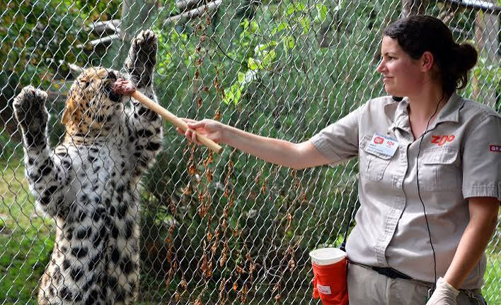
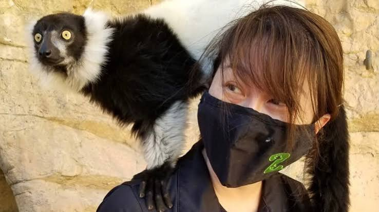

Zookeeper
Zookeepers are responsible for the daily care and management of animals in a zoo. They feed, clean, and monitor the health of the animals, as well as provide enrichment activities to keep them mentally stimulated. Zookeepers also educate the public about the animals and their habitats, and may assist with research and conservation efforts.

Veterinarian
Veterinarians in zoos are responsible for the medical care of the animals. They diagnose and treat illnesses and injuries, perform surgeries, and develop preventive care plans. Veterinarians also work closely with zookeepers to monitor the health of the animals and ensure they receive proper nutrition and care.
